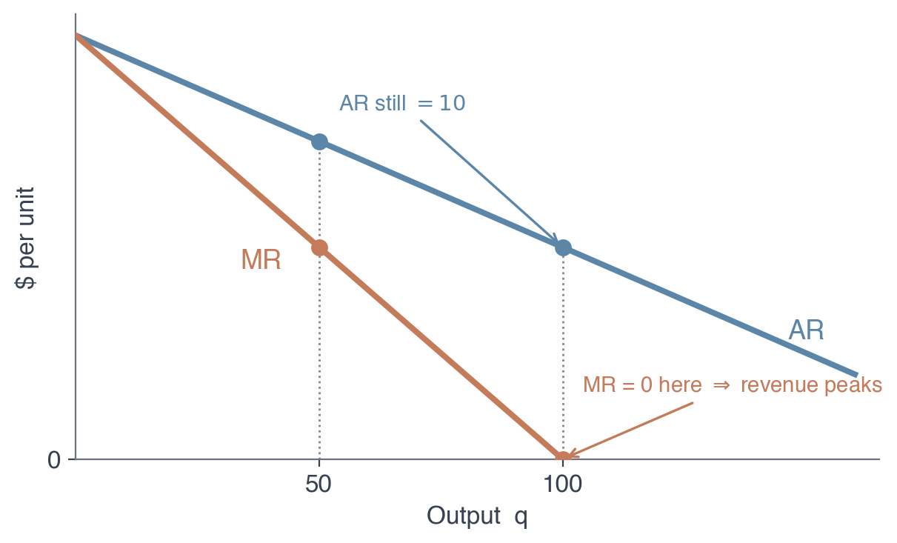
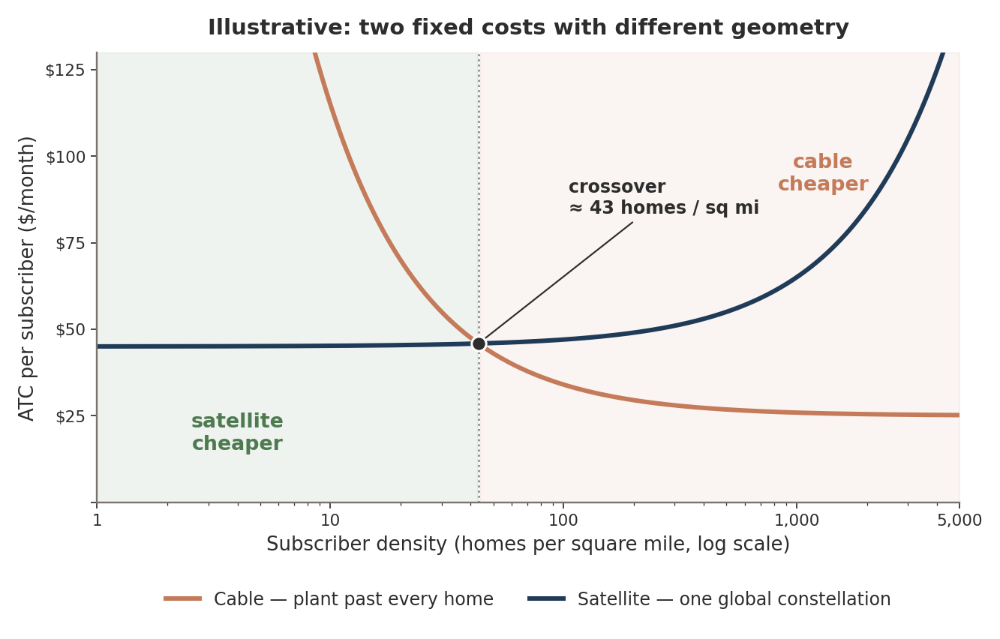

When Spotify raised Premium from \$10.99 to \$11.99, how much of that extra dollar did it keep? This chapter answers with a single equation — \(MR = MC\) — and turns it into a number you can read off any price tag.
Dr. Richeng Piao
Department of Economics
Northeastern University
Learning Objectives
By the end of class today, you will be able to…
11.1
Derive marginal revenue from inverse demand and explain why \(MR < P\) for any price-maker. (Bloom L3)
11.2
Solve the monopolist's price and quantity from \(MR = MC\) end-to-end on a linear-demand example. (Bloom L3)
11.3
Compute the Lerner index and connect markup to elasticity: \((P-MC)/P = -1/\varepsilon_D\). (Bloom L4 — central result)
11.4
Quantify the deadweight loss of monopoly as the Harberger triangle \(\tfrac12(P_M-MC)(Q_C-Q_M)\). (Bloom L4)
11.5
Analyze natural monopoly (subadditive cost) and evaluate price-cap and average-cost regulation. (Bloom L5)
From Price-Taker to Price-Maker
Ch 10 — perfect competition
Firm is a price-taker: \(\partial p/\partial q_i = 0\)
\(MR = p\), so profit-max sets \(p = MC\)
Free entry → \(p = \min ATC\), \(\pi = 0\)
Welfare theorem holds: \(Q^*\) maximizes total surplus
Ch 11 — monopoly
Firm is a price-maker: \(\partial p/\partial q < 0\)
\(MR < p\), so profit-max sets \(MR = MC\)
Price sits above \(MC\) — the markup
Welfare theorem fails: \(Q_M < Q_C\), deadweight loss returns
One assumption changes everything. A monopolist faces the entire market demand curve, so selling one more unit forces the price down on every unit it sells. That single fact — \(\partial p/\partial q < 0\) — generates marginal revenue below price, a positive markup, and the deadweight loss the §10.9 price floor previewed — only now the firm chooses it.
Why Does Spotify Charge \$11.99?
June 3, 2024: Spotify raises US Premium Individual from \$10.99 to \$11.99 — its first big US hike since 2018. By the end of 2025 it had 290M Premium subscribers and a 34.8% Premium gross margin. In early 2026 it raised the price again, to \$12.99.
Spotify is not a price-taker. Apple Music has ~⅓ its subscribers; Amazon, YouTube Music, Tidal are smaller still. When Spotify raises its price, the price of Spotify Premium rises — some subscribers churn, most stay.
The committee's question wasn't which direction — you already know that. It was how much: does the extra revenue from retained dollars beat the revenue lost to churn? The answer is a single equation: \(MR = MC\).
\$11.99
US Premium Individual (2024 hike)
290M
Premium subscribers, Q4 2025
\$8.40
Royalty-share \(MC\) = 0.70 × \(P\)
−3.33
Implied demand elasticity \(\varepsilon_D\)
These four numbers — \((P, N, MC, \varepsilon_D) = (\$11.99,\ 290\text{M},\ \$8.40,\ -3.33)\) — are locked for the rest of Part IV. Chapters 12, 13, and 14 inherit them verbatim.
Market Failure #1 — Market Power
When a seller faces no real competition, price floats free of cost.
Gorda, CA — one gas station on a remote stretch of Highway 1. Regular: $9.30/gal, ~$2 above stations down the coast.
No rival station for miles — so the seller is not a price taker. It restricts what's available and sets price far above cost. Reviews call it "straight up price gouging"; economists call it market power.
It doesn't take a remote road.DOJ v. RealPage (2025): landlords fed private data into a shared pricing algorithm that recommended coordinated rent hikes — a "technological cartel," collusion without anyone meeting in a conference room.
Either way, price is pushed above the competitive level. Willing buyers get priced out, surplus-creating trades never happen — and that gap is the deadweight loss. Full treatment: Chapter 11.
When Market Power Draws a Lawsuit
January 2023: the U.S. Department of Justice sued Google for monopolizing digital advertising technologies.
That’s the same ad-auction business from the last slide — the $11-a-click engine behind a near-$2-trillion company.
Having market power is legal. Abusing it to lock out rivals is what antitrust targets.
We’ll return to the full Google antitrust story — and its remedy — in §11.5.
Market Power, Made Formal
Chapter 9's gigafactory faced a flat residual demand: it could sell 50 GWh or 100 at the going \$84/kWh. A monopolist cannot. Spotify is the only seller of Spotify Premium, so it faces the entire market demand curve:
A one-unit increase in output lowers the price the firm can charge on all its units. Selling more requires charging less; charging more means selling less. The two choices are duals — pick \(q\), read \(P\) off demand.
What market power lets the firm do: charge above marginal cost. A price-taker who set \(p > MC\) would lose every sale to a rival at \(p = MC\). A monopolist, with no rival to undercut it, sustains the wedge:
markup \(= P - MC > 0\)
That wedge is what the welfare theorem cares about. Ch 10's equilibrium was efficient because \(p = MC\). Any wedge between consumer benefit and producer cost generates deadweight loss — the rest of Part IV.
A subtle point: Spotify is not literally the only music platform. But it is large and differentiated enough that its residual demand — what's left after consumers choose between it and substitutes — still slopes down. The "monopoly" treatment is an approximation; Chapter 13 refines it with explicit rivals.
Five Sources of Monopoly Power
Most real monopolies combine several — but each starts here.
1. Control of a key input. Own a resource rivals can’t replicate — ore, land… or software.
2. Switching costs & network effects. The cost of leaving — and the pull of where everyone already is.
3. Product differentiation & branding. Make consumers see your product as genuinely one-of-a-kind.
4. Economies of scale & natural monopoly. One firm serves the whole market more cheaply than two.
5. Government-created monopoly. Patents, franchises, licenses — the state grants exclusivity.
1 · Control of a Key Input
Physical — rubber, 1900s
Britain moved rubber trees to blight-free Asian plantations. When Ford tried to copy it — “Fordlandia,” 1927 — Amazon leaf blight destroyed it. The barrier was biological.
Digital — Nvidia, 2020s
~86% of AI accelerator chips. But the moat is CUDA — 20 years & 4M+ developers built on it. Rewriting that code costs years.
The H100 GPU costs ~$3,320 to make and sells for ~$28,000 — an 88% gross margin that only an extreme switching cost can defend.
The input that matters is no longer the silicon — it’s the software ecosystem locked on top of it.
Control Over the Key Factor of Production — AI Chips
One 8×B200 server: $430,500 — the physical silicon.
In the AI era, the critical input isn’t crude oil — it’s specialized semiconductor hardware.
NVIDIA 80–90%
AMD 5–8%
Share of the global AI accelerator chip market
$130B+ in data-center revenue in 2025 alone. Rivals are left scrambling for single-digit share.
The question: why can’t a rival just engineer a faster chip and steal the market back?
2 · Switching Costs & Network Effects
Switching cost — what you pay in money, time, or lost data to leave. Years of apps, an Apple Watch, iMessage, the blue bubble … ~58–60% of US users stay on iPhone, so Apple charges a 15–30% App Store cut.
Network effect — the product is worth more as more people use it. Consoles, social media, messaging → the market tips toward one platform, with no patent or grant required.
DOJ Sues Apple — Monopolizing Smartphone Markets
The DOJ’s 2024 case lists five exclusionary tactics — blocking super-apps, suppressing cloud gaming, degrading cross-platform messaging, hobbling non-Apple watches, and limiting third-party wallets.
The real question: is Apple’s exclusion of cross-platform features enhancing user experience, or just boosting iPhone sales? The DOJ argues the latter.
Class Vote — Better Experience, or Better Upsell?
Take the five DOJ tactics at face value. Apple’s story: it is integration — the same bundle of devices simply works better together, so buyers get more value per dollar and consumer surplus rises.The DOJ’s story: it is exclusion — friction engineered to make the iPhone the only tolerable choice, so the surplus moves to Apple. Which is it?
A) Efficiency — integration really does raise the value of the same bundle → CS rises
B) Upsell — the friction exists to sell iPhones → CS falls, surplus shifts to Apple
C) Both — the quality gain is real, but Apple keeps it exclusive on purpose
D) Depends on the switching cost — harmless while leaving is cheap, harmful once you’re locked in
60 sec to vote
The Vote — and How an Economist Settles It
If it’s efficiency (A)
The same hardware bundle is worth more to you — willingness to pay rises, demand shifts out, and consumer surplus and total surplus both rise. That is a real efficiency gain, and antitrust law counts it as a legitimate business justification.
If it’s upsell (B)
No new value is created. The friction raises your switching cost, your demand turns less elastic, and by the Lerner rule Apple’s markup rises — a transfer out of CS, plus the DWL of every cross-platform trade that never happens.
The deciding question isn’t motive — it’s the less-restrictive-alternative test: could Apple deliver the same integration benefit without degrading rivals? If yes, the exclusion is doing the work, not the engineering.
Hold that test. The next slide is a case you can run it on — a customer asks Tim Cook why he can’t send his mum a video. Listen to whether the answer is “we can’t” or “buy a different phone.”
“Buy Your Mum an iPhone”
The customer was asking why the video is broken. Cook doesn’t answer the question — he answers with a purchase.
Run the test. The answer was never “we can’t” — and in iOS 18 Apple shipped RCS, fixing the cross-platform photo and video quality it had left broken for a decade. Under regulatory pressure, not new engineering.
The honest counter. Cross-platform encryption was a real technical constraint — unlike video compression. Which is the point: the parts Apple couldn’t easily do and the parts it wouldn’t are separable.
3 · Product Differentiation & Branding
Make the product feel unique — and competition softens into pricing power.
Tesla
Early self-driving lead + a proprietary Supercharger network legacy automakers couldn’t match.
Red Bull
Extreme-sports identity so strong rivals can’t enter — despite trivially low production cost.
Rolex · Mercedes
Decades of brand image → prices far above production cost, sustained by perception alone.
Apply Differentiation is the weakest barrier — it’s the whole story of Chapter 13 (monopolistic competition), where rivals can enter with their own twist. Here it’s one ingredient in a bigger moat.
Example: Tesla Supercharger
The Supercharger network — three moats in one.
Control of a key input → prime charging locations.
Charging network → switching costs (leave Tesla, lose the network).
More chargers → lower ATC (economies of scale).
One product, three reinforcing moats at once — the sources of monopoly power rarely come alone.
4 · Economies of Scale & Natural Monopoly
Natural monopoly — one firm can supply the whole market at lower average cost than two could. Arises with very high fixed cost + very low marginal cost.
Electric grid. ~$21.9B/yr US fixed cost; the cost of one more kWh is tiny. Two competing grids = both charge more.
Starlink. ~$10B+ sunk, 8,300+ satellites, 10M+ subscribers (2026). One more subscriber ≈ the cost of mailing a dish. A rival must rebuild the whole constellation.
"Free Entry" With a \$15B Price Tag?
Fair objection: a gigafactory costs billions and takes 2–4 years to build. In what sense is that free entry? Because "free" modifies barriers, not cost — it is a claim about symmetry of opportunity, not about the size of the check.
Patents or proprietary tech an entrant can't replicate or license
Incumbent-only access to inputs, distribution, or customers
A barrier is something money can't buy past. The \$15B buys capacity — a cost of producing, not a toll for the right to compete. CATL, Stellantis–Samsung, LGES, and BYD each wrote a comparable check in the same 24 months. Nobody needed a battery license.
Where the objection does bite
1. It breaks condition 1, not condition 3. When minimum efficient scale is large relative to the market, only a few firms fit — exactly why CATL holds 39.2% and HHI sits near 2,000. Price-taking is the assumption under strain.
2. Sunk capital makes exit the un-free half. Northvolt's backers recovered almost none of the \$15B. In the model exit is instantaneous; in Skellefteå the plant ran at 5% of capacity for two years before the board pulled the trigger.
Free entry and exit is a claim about the direction capital flows when \(\pi \neq 0\) — not about the speed it moves, and not about the price of a ticket.
5 · Government-Created Monopoly
The state grants exclusivity: USPS first-class mail, water franchises, NYC taxi medallions (once >$1M before Uber).
Patents & copyrights are the big ones — a 20-year exclusive window to recoup R&D. Without them, rivals copy on day one and free-ride.
One drug, one patent — Ozempic / month
United States
$969
Germany
$59
India (no patent)
$14
Manufacturing cost
< $5
Same molecule, same factory — the price gap is entirely the patent. We’ll quantify it with the Lerner Index at the end.
Government IP — Patents
Patents give inventors of new products or processes legal protection for a limited period — usually 20 years.
Vital in pharma, tech, and auto manufacturing — the patent window is what makes huge R&D bets worth taking.
The first term is the revenue from the new sale at the new price. The second is the revenue lost on the \(q\) units the firm now sells for less. Since \(P'(q) < 0\), the sum is strictly below \(P\): the \(MR\) curve lies under demand at every \(q > 0\).
At the peak \(AR=10\) but \(MR=0\). A firm watching \(AR\) alone thinks "still earning \$10/unit — sell more." Wrong: the next unit earns nothing at the margin.

Calculus Corner 11.1 — MR and the Inverse-Elasticity Rule
Total revenue is \(TR(q) = P(q)\cdot q\). Differentiate with the product rule:
\(|\varepsilon_D| = 1\) (unit-elastic): \(MR = 0\). Total revenue is at its peak — one more unit adds nothing.
\(|\varepsilon_D| < 1\) (inelastic): \(MR < 0\). Revenue is falling as the firm sells more.
Linear Demand: Same Intercept, Twice the Slope
For linear demand \(P(q) = a - bq\), we have \(P'(q) = -b\), so:
\(MR(q) = a - bq + q(-b) = a - 2bq\)
Commit this to memory: linear \(MR\) has the same vertical intercept \(a\) and twice the slope of demand. It crosses the horizontal axis at \(q = a/(2b)\) — exactly half the demand intercept \(q = a/b\).
Heads Up 11.1
\(MR = P\) only at \(q = 0\). A common trap is to set \(MR = P\) at the optimum, as if the firm were a price-taker. For linear demand, \(MR = P\) requires \(a - 2bq = a - bq\), i.e. \(q = 0\). The curves cross only at the vertical intercept; at every positive \(q\), \(MR\) lies strictly below \(P\). If your FOC has \(MR = P\), recompute.
Identical logic to Ch 9's \(p = MC\) — produce until the next unit's revenue contribution equals its cost — but with \(MR\) replacing \(p\) because the firm is no longer a price-taker.
The recipe: (1) read \(MC\) off the cost function; (2) read \(MR\) off inverse demand; (3) set \(MR = MC\), solve for \(Q_M\); (4) read \(P_M = P(Q_M)\) off the demand curve.
Step through the worked airline example: \(MR = MC\) sets \(Q^* \approx 45\); read \(P^*=\$218\) up on demand.
Problem. A monopolist faces \(P(Q) = 100 - Q\) and constant \(MC = 20\). Find \(Q_M\), \(P_M\), profit, and the deadweight loss vs the competitive benchmark.
Takeaway. For linear demand and constant \(MC\), the monopolist produces exactly half the competitive quantity (\(40\) vs \(80\)). The price wedge generates \$800 of deadweight loss — value that simply disappears.
The Welfare Picture — Who Gets the Surplus?
Same numbers as Walkthrough 11.1: \(P^d = 100 - Q\), \(MC = 20\), \(Q_m = 40\), \(Q_c = 80\).
Surplus decomposition
Consumer surplus (competition)A+B+C = $3,200
Producer surplus (competition)0
Consumer surplus (market power)A = $800
Producer surplus (market power)B = $1,600
Deadweight loss (market power)C = $800
B = $1,600 is exactly the monopoly profit and C = $800 the deadweight loss from Walkthrough 11.1. Market power turns the competitive triangle \(A+B+C\) into \(A\) for consumers and \(B\) for the firm — while \(C\) simply vanishes.
Common Misconception
“A monopolist charges the highest possible price.”
It could charge $344 — but then it sells only 10 seats and earns just $1,440. The profit-maximizing price is $200, well below the top of the demand schedule.
A monopolist doesn’t charge as much as possible — it charges where MR = MC, which pins it to one specific point on the demand curve. Higher price ⇒ too few buyers; lower price ⇒ margin too thin.
The monopoly airline: \(P = 380 - 3.6Q\), \(MR = 380 - 7.2Q\), \(MC = \$56\). Drag \(Q\) — price falls along demand, and because every seat is cut to the same price, \(MR < P\). The green rectangle \((P-MC)\,Q\) is largest at \(Q_M = 45\), \(P_M = \$218\), where \(MR = MC\) — not at the $344 the firm could charge. Push \(Q\) toward the competitive \(Q_C = 90\) and the red deadweight-loss triangle shrinks to zero.
Monopoly Is Not a Guarantee of Profit
If demand sits entirely below ATC, the monopolist still produces at MR = MC — but the price it reads off demand is below ATC. It loses money.
Short run: keep operating if P > AVC. Long run: exit — exactly like a competitive firm.
Monopoly gives the power to restrict output and raise price. It does not give the power to create demand that isn’t there. Being the sole seller of something nobody wants is not profitable.
Also a myth: “Monopoly is illegal.” Having one is legal. Abusing anticompetitive tactics to get or keep one is not — that’s §11.5.
Read Demand Elasticity Off a Price Tag
Define the markup as a fraction of price — the Lerner index \(L = (P-MC)/P\). Substitute the FOC \(MR = MC\) and the inverse-elasticity form:
\(P\!\left(1 + \tfrac{1}{\varepsilon_D}\right) = MC \;\Rightarrow\; \dfrac{P-MC}{P} = -\dfrac{1}{\varepsilon_D}\)
The profit-maximizing markup is exactly the negative inverse of demand elasticity. It's local — it holds at the operating point — but there it's exact for any smooth demand, not just linear.
\(\varepsilon_D = -2 \Rightarrow L = 0.5\) (price 50% over \(MC\)). \(\varepsilon_D = -10\) (nearly a price-taker) \(\Rightarrow L = 0.1\). More elastic demand → smaller markup.
Fig 11.5 — markup \(L = -1/\varepsilon_D\); Spotify and Wegovy bracket the range.
Walkthrough 11.2 — Spotify Premium's Lerner Index
Problem. US Premium Individual lists at \(P = \$11.99\). Spotify pays ~70% of revenue to artists/labels; treat the per-subscriber royalty as \(MC\). Find \(L\), the implied \(\varepsilon_D\), and compare to academic estimates.
Published estimates for paid-streaming demand cluster in \(\varepsilon_D \in [-2.0, -1.4]\). At \(\varepsilon = -1.7\), the predicted markup is \(L = 0.588\) — far above Spotify's observed \(0.300\).
Check: \(|\!-\!3.33| > 1\) ✓ (elastic). The wedge is diagnostic, not a refutation — Heads Up 11.4 explains why.
Takeaway. Spotify's 30% markup implies demand elasticity \(-3.33\) — more elastic than published estimates. Either the firm isn't at the static profit-max FOC, or the simple model is missing something. The gap tells you where to look.
Heads Up 11.4 — Observed Markups May Diverge from \(-1/\varepsilon_D\)
\(L = -1/\varepsilon_D\) is what theory predicts if the firm sits at the static profit-max FOC. Real firms often don't, for at least five reasons:
1. List \(\ne\) effective price. Spotify's average revenue per user (ARPU) is ~€4.70 — about \$5.10 — far below the \$11.99 US list, because the base spans Family, Duo, Student, and cheap emerging-market plans. Compute \(L\) at ARPU and \(\varepsilon_D \approx -2.87\).
2. Free-tier substitution. Spotify's ad-supported free tier is an unusually cheap substitute. A churned subscriber often drops to Free, not to Apple Music — raising effective elasticity.
3. Competition from substitutes. Apple, Amazon, YouTube Music, Tidal, podcasts, and radio all bound the price. The "monopoly" framing is a residual-demand approximation — Ch 13 puts the rivals back in.
4. Dynamic pricing. Spotify trades static profit for user-base growth and lock-in. A firm pricing below its static optimum to grow looks like a low-Lerner outlier even if long-run profit is higher.
5. Strategic preemption. A high price invites entry; Spotify's committee forecasts competitor responses we don't see. Bottom line: the Lerner equation tells you what should hold under the simplifying assumptions — deviations are diagnostic, not refutations.
Market Power ≠ Market Share
The Lerner index \(L = -1/\varepsilon_D\) is set by elasticity (how replaceable you are), not by how big you are. A tiny niche brand can out-markup a giant.
Dr. Brown’s Cel-Ray — a celery soda with a sliver of the market — has no close substitute, so its demand is less elastic and it marks up 50% over \(MC\). Coca-Cola dominates shelves but faces Pepsi, store brands, and every other cola — more elastic demand, a markup of only 24%. Big share, less pricing power.
Reacting to Market Changes — When Marginal Cost Rises
A price-maker re-optimizes when costs change — just like a price-taker. Suppose a fuel-price spike lifts the airline’s marginal cost from \(\$56\) to \(\$80\) per seat. Re-run \(MR = MC\) on the same demand \(P = 380 - 3.6Q\):
\(MC\uparrow \Rightarrow Q\downarrow,\ P\uparrow\) — but \(P\) rises only \(\$12\) on a \(\$24\) cost jump. With a downward-sloping \(MR\), the monopolist passes through about half the cost increase.
Higher \(MC\) (\(MC_1\!\to\!MC_2\)) moves the optimum from \(b\) to \(d\): less output, a higher price.
When Demand Rotates — Price Sensitivity
A rotation in demand (a change in price sensitivity / elasticity) leaves a price-taker untouched but moves a price-maker.
For a price-taker, demand’s shape is irrelevant — only \(S \cap D\) matters. For a price-maker, shape is everything: more elastic demand shrinks the markup (the Cel-Ray vs Coca-Cola lesson). The engine is always \(MR = MC\), then read \(P\) up on demand.
Poll #1 — Two Firms, Same \(MC\). Who Charges More?
Firm A faces demand elasticity \(\varepsilon_D = -1.5\); Firm B faces \(\varepsilon_D = -4\). Both have the same constant \(MC\). Which firm sets the higher markup over marginal cost?
A) Firm A (\(\varepsilon_D = -1.5\))
B) Firm B (\(\varepsilon_D = -4\))
C) Same markup — \(MC\) is equal
D) Can't tell without the demand intercepts
60 sec to vote
Answer: A — the less elastic firm charges more
The Lerner index depends only on elasticity: \(L = -1/\varepsilon_D\). Less elastic demand → bigger markup.
Trap C: equal \(MC\) does not mean equal markup — markup is set by elasticity, not cost. This is exactly why patented Wegovy (\(\varepsilon \approx -1\)) marks up 99% while Spotify (\(\varepsilon \approx -3.3\)) marks up only 30%.
Theory and Data 11.1 — The Rise of US Aggregate Markups
De Loecker–Eeckhout–Unger (2020, QJE)
Average markup of price over \(MC\) across US public firms rose from ~\$1.21 (1980) to ~\$1.61 (2016). In Lerner terms (\(L = (\text{markup}-1)/\text{markup}\)), the aggregate index roughly doubled, ~0.17 → ~0.38, over 36 years.
Concentrated in services, information, retail, and finance — the "superstar firm" story. Manufacturing rose only modestly.
But the measurement is contested:
Bond et al. (2021): revenue-based \(MC\) estimates can be unidentified without quantity data — the trend may reflect input changes, not market power.
Raval (2023): markups from labor inputs vs materials inputs frequently disagree by large margins.
Two facts survive: markups vary enormously across industries (near 0 in agriculture to \(>0.85\) in patented pharma), and the distribution has spread out over time.
Ch 10 proved the competitive \(Q_C\) maximizes total surplus. A monopolist sets \(MR = MC\) instead of \(P = MC\), producing \(Q_M < Q_C\). The units between \(Q_M\) and \(Q_C\) would have traded competitively — their value to consumers exceeds their cost — but don't. That lost surplus is the deadweight loss.
Recall from Principles — 1116 §11.3
"The Welfare Cost of Monopoly" drew this as the triangle between demand and \(MC\), bounded by \(Q_M\) on the left and \(Q_C\) on the right. In Principles you measured it as a triangle; here we measure it as an integral — which generalizes to non-linear demand and rising \(MC\).
Fig 11.4 — the Harberger triangle between \(Q_M\) and \(Q_C\).
Calculus Corner 11.2 — Deadweight Loss as an Integral
The deadweight loss is the un-captured surplus on the un-traded units:
For \(P^d = a - bq\) and constant \(MC = c\), it reduces to the Harberger triangle:
\[ DWL_M = \tfrac12(P_M - c)(Q_C - Q_M) \]
The integrand \(P^d - MC\) is positive on \([Q_M, Q_C]\) — by definition, demand lies above \(MC\) where the competitive market would still produce. The integral sums those gaps.
We've now seen these surplus integrals four times: Ch 2 introduced them, Ch 3 used them for tax DWL, Ch 10 proved the welfare theorem, and Ch 11 measures the loss from a price-cost wedge.
For convex \(MC\) (rising at an accelerating rate), the triangle underestimates the true integral; the gap closes faster than linearly near \(Q_C\).
Walkthrough 11.5 — DWL with Rising \(MC\): Integral vs Triangle
Problem. \(P^d(Q) = 100 - Q\), \(MC(q) = 20 + 0.1q\). Find \(Q_M\), \(P_M\), \(Q_C\); compute DWL exactly by integration and compare to the triangle.
Exact \(= \$659.48\); triangle \(= \$659.48\). They agree — because \(MC\) is linear, so the integrand is linear and its area is exactly a triangle.
Takeaway. The Harberger triangle is exact whenever demand and \(MC\) are both linear. If \(MC\) rises convexly, the triangle underestimates; concavely, it overestimates. The integral is always the exact computation.
Theory and Data 11.2 — How Big Is the Welfare Cost of US Monopoly?
0.1%
Harberger (1954): DWL as share of GNP
5–10%
Edmond–Midrigan–Xu (2023): of consumption
Harberger added up one deadweight-loss triangle per industry and concluded monopoly was a nuisance, not a macro problem. Modern whole-economy models — ones that let firms differ from each other — put the cost 50–100× higher. Same phenomenon, wildly different verdict.
Where does the gap come from? A triangle counts the trades lost in one market. Markups bend the whole economy two ways it can’t see.
1 · The wrong firms get the workers. A bigger markup means a firm cuts output further below the efficient level — so it hires fewer workers than it should, and they end up at low-markup firms instead. Same inputs, less output. It is the spread in markups that hurts, and one industry’s triangle can’t see a spread.
2 · Markups tax working. If everything is priced above \(MC\), your wage buys less than your hour produced — so people work less and buy less. An economy-wide sales tax nobody collects.
Harberger asks how many trades this market lost. The modern models ask how much smaller the whole economy is.
The Societal Tax: A 30% Price Floor
Apple extends its monopoly from the iPhone into the App Store — the only channel to reach an iPhone user. Its marginal cost to host one more app is fractions of a cent, yet it takes a 30% cut of every sale.
A 30% artificial price floor. The cut acts like a tax that raises every developer’s average variable cost. On thin margins, surrendering 30% of gross revenue makes the app unviable — so it never launches.
Consumers would value those apps above the cost to make them but below the post-cut price — so the transaction never happens. The software never built, the utility never felt, is the deadweight loss.
This deadweight loss is invisible — you only see it in what’s absent: each dashed outline is the app, the startup, that never launched.
Con · the cost of market power Rent-Seeking — Spending to Stay on Top
Rent-seeking — using real resources (lobbying, litigation, political influence) to capture wealth without creating any new wealth.
Because monopoly profits are huge, firms spend real money to defend them — money that builds nothing.
~$70M
Top-5 US tech firms’ 2025 federal lobbying — Meta, Amazon, Microsoft, Google, Apple
€151M
EU digital-industry lobbying, 2025 (+33% vs 2023) — much aimed at softening the Digital Markets Act
Meta alone kept ~87 lobbyists in Washington — about one for every six members of Congress. Pure economic waste.
Con · the cost of market power X-Inefficiency — No Pressure to Be Sharp
X-inefficiency — operating above minimum cost because no competitor forces you to be efficient.
Competition is a discipline. Remove it, and the firm drifts off its own cost curve — into overstaffing, bloat, and slack a rival would never allow.
Three faces of it — press ↓: a privatized airline, a postal monopoly, and a CEO’s $6,000 shower curtain.
Cons vs Pros · the ledger The Innovation Defense — the Societal Ledger
Weigh monopoly’s costs against its justifications — the great open debate.
The Costs — Market Failures
Wealth transfer — charging $28k for a $3.3k chip.
Deadweight loss — the graveyard of un-built apps and un-made trades.
Resource waste — bloated management + $70M on defensive lobbying.
The Justifications — Market Fuel
Capital magnet — attracts the billions for high-risk infrastructure (Starlink’s $10B).
R&D subsidization — funds the 2.4×/yr growth in frontier AI (a ~$1B run).
Paradigm shifts — pushes past physical limits (thousands of satellites into orbit).
Evaluate DWL is a cost today; the innovation it funds is a benefit tomorrow. Which wins? The exact tension behind drug patents (§11.9). Press ↓ for the upside in detail.
§11.7
Natural Monopoly
When the cost function itself forces one firm: \(c(Q) \le \sum_i c(q_i)\)
When the Math of Cost Forces One Firm
Natural monopoly is a fact about the cost function, not a strategic choice — it is defined by subadditivity:
\(c(Q) \le \displaystyle\sum_{i=1}^n c(q_i)\) for any split \(\textstyle\sum_i q_i = Q\)
One firm producing \(Q\) costs no more than the same \(Q\) split across many firms. The classic recipe: positive fixed cost + constant \(MC\), giving \(ATC = F/q + \mu\), which falls forever.
Heads Up 11.5
Natural monopoly is a cost story, not a size story. A small market is a natural monopoly if fixed cost is large relative to demand. "Monopoly" (one firm exists) \(\ne\) "natural monopoly" (one-firm production is cost-minimizing).
Fig 11.6 — declining \(ATC\): one firm always undercuts two.
Case Study — Starlink: When Free Entry Can't Happen
Different technology → dramatically different supply curves: a gas peaker's \(MC\) rises steeply, but Starlink's \(MC \approx 0\) makes its supply nearly flat. Push that to the limit — a huge fixed cost with \(MC \approx 0\) means \(LRATC\) keeps falling, so a second entrant can't survive and the market tips to a natural monopoly (Ch 11).
\$10B
Sunk cost — satellites + rockets
10M
Subscribers (Feb 2026)
The rival's dilemma: a competitor also sinks ~\$10B, then has to split the customers — neither firm covers its debt, so both go bankrupt. The math leaves room for exactly one firm — a natural monopoly.
Who Does Starlink Actually Take?

Model, not reported data — neither SpaceX nor the cable operators publish per-subscriber ATC. The shape is the content.
① The share → ATC loop is real. With \(MC \approx 0\), \(ATC \approx F/Q\): every new subscriber spreads the same constellation over one more head. Lower ATC → lower price → more share → lower ATC. That feedback is the natural-monopoly engine.
② But \(MC \approx 0\) only while the cell has slack. Capacity is shared per geographic cell, so in a crowded one an extra subscriber slows everyone — a genuine marginal cost. Charter's CEO: Starlink is "too capacity constrained to be a serious threat in urban and suburban markets."
③ Same label, different geometry. Cable's fixed cost is plant past every home, so its ATC falls with density. Starlink's is one constellation — global, geography-blind. Hence the crossover: Starlink takes the thin edge of the map, not the cities.
④ Direct-to-cell — buying the barrier. The FCC approved SpaceX's purchase of ~65 MHz of EchoStar spectrum on 12 May 2026 (AWS-3/AWS-4/H-block, \$2.4B escrow), its first exclusive nationwide spectrum for direct-to-device — a claimed 100× capacity gain. Note what was bought: not a cost advantage, a licence a rival cannot replicate — the §10.2 barrier, in the wild.
~8M
Starlink users worldwide — ~7th-largest US fixed ISP
15.5M
T-Mobile + Verizon fixed-wireless subs — terrestrial, so it works where cells are dense
−280K
US cable broadband subs, Q1 2026 (was −320K) — mostly to fibre and fixed wireless
Careful with the arrow of causation. Cable is losing subscribers, but not mainly to Starlink — the substitute doing the damage is terrestrial fixed wireless, which thrives in exactly the dense areas where a satellite cell congests. The cost geometry in the figure predicted that.
The Electricity Market — Monopoly
One set of wires to your home — and no second supplier to call.
1. One firm — a single utility owns the wires to your home; you can’t shop the grid. ● one seller
2. No substitutes — grid power is unique; no rival’s electrons reach your outlet. ✗ unique
3. Insurmountable barriers — a second parallel grid is absurdly costly (a natural monopoly) — plus a regulatory franchise. ✗ blocked
4. Price-maker — the utility would set the price, so a public utility commission caps the rate instead. $ rate-regulated
5. Profit can persist — barriers protect it; regulators allow a “fair return.” ● sustained
Verdict → Monopoly — one seller, no substitutes → price-maker (max power, tamed by regulation) · Ch 11
Natural Monopoly — One Set of Pipes
Some markets are cheapest served by one firm. Building a second gas, water, or power network wastes enormous fixed cost — a natural monopoly. That’s why we regulate utilities instead of forcing competition.
Calculus Corner 11.3 — Subadditivity and the Failure of \(p = \min ATC\)
For \(c(q) = F + \mu q\), split \(Q\) across \(n\) firms:
\(\min ATC\) does not exist on \((0, \infty)\): \(ATC\) declines forever, approaching \(\mu\) only as \(q \to \infty\). There's no finite output where a competitive market can settle.
Chapter 10's free-entry condition \(p = \min LRATC\) fails. The cost function pushes the market toward concentration: one big firm pays \(ATC \to \mu\); many small firms each pay far more. The cost-minimizing structure is one firm — regardless of antitrust law.
Problem. A firm has \(c(q) = 100 + 5q\). (a) Verify subadditivity at \(Q = 20\): compare one firm producing all 20 against two firms producing 10 each — that is, check whether \(c(20) < c(10) + c(10)\). (b) Show \(ATC\) is everywhere declining. (c) Confirm \(p = \min ATC\) has no solution.
Set up & solve
One firm at \(Q=20\): \(c(20) = 100 + 100 = \$200\). Two firms at 10 each: \(2(100+50) = \$300\). \(200 < 300\) ✓ — saving \(= \$100 = F\).
General: \(\sum c(q_i) - c(Q) = (n-1)(100) > 0\) for any \(n > 1\). Subadditive everywhere.
\(\lim_{q\to\infty} ATC = 5\), never achieved at finite \(q\). So \(p = \min ATC\) has no finite solution — no competitive equilibrium exists.
Takeaway. Positive fixed cost + constant \(MC\) is the textbook recipe for natural monopoly. The competitive \(p = \min ATC\) has no solution; the market necessarily concentrates. Whatever the policy response, it must take this as given — which is §11.8.
§11.8
Regulation Tradeoffs
Three regimes for the natural monopolist: unregulated, \(p = MC\), \(p = ATC\)
Regulating the Natural Monopolist
Natural monopolies have economies of scale so large that one firm serves the whole market at lower cost than several could. You can’t just “add competition” — so policy must pick how to regulate:
1
Public ownership — the government owns and operates the monopoly. (e.g., municipal water)
2
Regulated private ownership — a private firm operates under government price & quantity limits. (e.g., the electric utility)
3
Franchise the right to operate — award the market to the firm offering the most competitive price and output.
Whichever path, the regulator’s real lever is the price it lets the monopolist charge — so the next question is: which price?
§11.9
Generic-Drug Entry
How fast monopoly power dissolves when entry barriers fall
Walkthrough 11.8 — The Truvada Generic-Entry Collapse (2020)
Problem. Gilead's Truvada (HIV PrEP) listed near \(P_1 = \$1{,}600\)/month under patent, \(MC \approx \$50\). Oct 2020: Teva launched the first generic; within a year the price fell to ~\$50 with multiple makers. Compute pre- and post-entry Lerner indices.
Pre-entry (monopoly)
\(L_1 = (1600 - 50)/1600 = 0.969\). Implied \(\varepsilon_D = -1/0.969 = -1.032\) — just barely elastic, a no-substitutes therapeutic.
Post-entry (competition)
\(L_2 = (50 - 50)/50 = 0\). Multi-source generic competition collapses the markup to ~zero — the market turns Bertrand-competitive (Ch 13).
Welfare: the \$1,550 that flowed to Gilead as monopoly profit becomes consumer surplus, and the DWL units convert into actual consumption.
Takeaway. Patent length is a deliberate static-vs-dynamic tradeoff: longer patents fund more R&D (dynamic gain) but extend the static DWL window (static loss). When the patent expires, the welfare-theorem failure is restored in months.
Heads Up 11.6 — Coase conjecture
A durable-goods monopolist with no commitment may be pushed toward \(p = MC\) anyway: buyers anticipate future price cuts and wait. Hence leasing (Xerox), planned obsolescence, and the shift to subscriptions.
Chapter Summary
Market power
A downward-sloping residual demand, \(P'(q) < 0\). Selling more lowers price on all units — the source of \(MR < P\).
Marginal revenue
\(MR = P(1 + 1/\varepsilon_D)\). Linear demand: same intercept, twice the slope. FOC: \(MR = MC\).
Lerner index ★
\(L = (P-MC)/P = -1/\varepsilon_D\). Markup is the inverse of elasticity — the central empirical tool.
Deadweight loss
\(Q_M < Q_C\) makes a Harberger triangle. Aggregate US cost: 5–10% of consumption (EMX 2023).
Natural monopoly
Subadditive cost (\(F + \mu q\)) → declining \(ATC\), no \(\min ATC\). \(ATC\) pricing kills ~99% of DWL.
Spotify ↔ Wegovy
\(L = 0.30\) (\(\varepsilon=-3.33\)) to \(L = 0.996\) (\(\varepsilon=-1.004\)) bracket the realistic range.
Why \$11.99? Because \(MR = MC\), and the markup it implies is \(-1/\varepsilon_D\). The Spotify thread continues: Chapter 12 lets the firm charge different prices to different groups — Student, Duo, Family, Premium.
Coming Up — Chapter 12: Pricing with Market Power
Today the monopolist charged one price to everyone. Chapter 12 relaxes that — and the same firm starts charging different prices to different groups.
Third-degree price discrimination: set \(MR_i = MC\) in each segment \(i\) \(\Rightarrow\) \(L_i = -1/\varepsilon_i\)
The Lerner index, per segment: charge a higher markup where demand is less elastic — Student vs Family.
Two-part tariffs: a fixed fee plus a per-unit price — set \(p = MC\), extract surplus through the fee.
Bundling: when does selling Word + Excel together beat selling them separately?
Before next class: read manuscript §12.1–§12.3. The Spotify Premium portfolio — Student \$5.99, Duo \$16.99, Family \$19.99 — is price discrimination in plain sight.